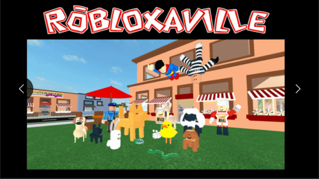

Guilty confession: I’ve had a ROBLOX account for 14 years. At 23 years old, that’s more than half my life. After picking up development again in 2021, I’ve had quite the walk through memory lane.
Being a dork is a lifetime commitment
Flash back to 2007: Spencer Elkington, 4th grade extraordinaire. Oh, to be at my peak again. While I appreciate that secondary schools mandate that all kids have a well-rounded curriculum to introduce them to a wide span of different fields of study, I can safely say that one of my least favorite classes was art. While I didn’t not enjoy spending an hour cutting, painting, gluing, and molding, there are only so many burnt ceramics and skewed portraits I could churn out before they - and my parents to whom that “art” was gifted - realized that perhaps a budding patronage in the fine arts wasn’t going to be in the cards for me.
Related point: Being a dork might be genetic
Around that same time, I made an account on ROBLOX, an online game platform that was just a year old in 2007. Founded originally as a physics engine by mechanical engineers, it transitioned into a gaming platform after (I can only assume) the founders decided simulating viable buildings was far less fun than blowing them up. One of the coolest features was ROBLOX Studio, an IDE for developing user-made games and content in Lua. If you could play a game, you could make a game, and that ease of entry introduced a whole generation - myself included - to the wild world of programming.
Cooking up small games for me and my friends is probably the closest I’ll ever get being an artist. I could never paint a canvas worth a damn, but in an increasingly digital world being able to write a bit of code lets you create as much as a paintbrush ever could. Always looking for ways to hang out with her son, my mom - who is and always will be the biggest, coolest dork I have ever met and will ever will meet - joined the platform in 2008 to make games too.
With a background in coding from her physics, geology, and chemistry studies at BYU during her undergraduate (because just studying one STEM field would be too easy, obviously), she was an artist of her own right when it came to making games her kids could play. Over time, one of those games developed into a project called Robloxaville that she actively developed on from 2008 to 2012. The game became one of the most played games on ROBLOX during that period, later superceded by a follow-on project called Lakeside that became one of the fastest-growing projects made on the platform within two months of its’ initial release.

Original Robloxaville thumbnail, 2008
This success was in no small part due to a feature she developed in 2009 called Morph Magic, a wildly clever, wildly hack-y workaround she discovered to modify the underlying skeleton of the ROBLOX player model and transform players into fully-animated dogs, cats, giants, or any of a dozen other models. The ad-hoc rigging method originally used in Morph Magic was the only method for modifying the player skeleton until ROBLOX added official rigging support - six years later. Watching millions of people enjoyed my mom’s masterpiece is what made me get into coding - first as a play tester, then as a (very amateur) contributor, and finally remastering the project in 2017.
Like I said: the biggest, coolest dork I have ever met and will ever meet.
The wild ways software can go horribly, horribly wrong
In 2013, my mom stopped developing on the platform. It’s not that she didn’t enjoy it - as a general rule, nobody in their right mind writes clever workaround libraries in their free time if they don’t enjoy it. What stopped her from developing on the platform was years of rampant client-side exploits made possible by some questionable decisions made in the development of the ROBLOX game engine. For the uninitiated, here’s what went wrong:
Whenever you use a device connected to the internet - your phone, laptop, tablet, desktop, etc. - it is communicating with tons of other computers called servers that belong to whatever service you happen to be using. When you’re browsing the web, it’s communicating with web servers. When you’re sending an email, it’s communicating with email servers. And when you’re playing ROBLOX, it’s communicating with ROBLOX servers.
These servers are responsible for running all the code that makes the game work. It diligently reads the Lua code that makes up a ROBLOX game, line by line, and changes the state of the game to whatever its’ told. If you tell the server to game.Workspace.Player.Head:Remove(), it will gleefully read that line of code and promptly remove the head of some unsuspecting victim.
That being said, sometimes the server needs a bit of help. Specifically, the server will occasionally rely on the game clients - your computer, and the computers of every other player in the game - to help it run some of the physics calculations. The millions of physics calculations run by the game can be a real pain in the ass for one computer, so the game server needs all the help it can get. Because of that, the client will occasionally send some information to the server to help the server know what the state of the game should be. Innocent enough, right?
It wasn’t always the case that the server relied on the clients for just physics calculations. Back in the early days of the ROBLOX engine, the client could send the server any information about the state of the game and the server would happily accept it as a gospel truth, even if it wasn’t in the game code. Here’s how the conversations between the server and client used to go:
CLIENT: Hey Server! I need you to remove this player’s head for me.
SERVER: Are you sure? I don’t remember seeing
game.Workspace.Player.Head:Remove()anywhere in the code.CLIENT: Yep! Definitely supposed to not have a head. That’s how it looks on my computer.
And then the server would, once again, gleefully remove the head of some unlucky soul, despite that fact that it was a rogue player’s client who gave the order, not the programmer.
These exploits, at a basic level, allowed users to wreak havoc on games: breaking game functions, harassing players, et cetera. However, the exploits were not always just to be annoying. The same exploit that allowed users to mess with the state of the server could also be used to download the source code for entire games, allowing users to rip and reupload entire years-long projects in minutes. At their worst, these exploits could get downright horrifying.
Back in the Saddle
In 2014 - following what could only be described as a complete COPPA cluster - ROBLOX began making moves to clean up and polish the platform. This came in two major changes to the way development worked.
1. Filtering Enabled
To fix the slightly problematic client exploit issue, the company introduced the Filtering Enabled feature to their game engine. Filtering Enabled locked down what types of information game servers would accept from the game client and fixed that little whoopsies mistake made in the younger days of the platform. However, development became a trickier after this feature was rolled out - many older games needed to be re-made to conform to the communication boundary between the server and client, and required a bit more formal knowledge of game development to make.
(For reference, I didn’t learn anything about server and client relationships until my third year into a computer science degree.)
Even though this feature could be disabled to allow legacy games to keep functioning (and yes, Robloxaville is legacy now - it even has the Fandom Wiki page to prove it), ROBLOX’s featured games algorithm wouldn’t touch your project with a ten-foot pole for risk of traumatizing even more unsuspecting children. This was especially important for the next major change,
2. Monetization
That’s right, folks - every line of code my mom wrote from 2008 to 2013, she wrote for free. Making fun games for millions of kids across the world, pro bono? That’s just the way Tiffany rolls.
With the introduction of the Developer Exchange (DevEx), anybody (who could afford a premium membership) could take the in-game currency generated from their games and exchange it for cold, hard cash. Funnily enough, in that original blog post explaining how the DevEx program worked, the company describes a system where:
[A] power-user [could cash] cash out and [buy] a car to get to and from college – all from developing a popular game on ROBLOX. This is the kind of story we can’t wait to tell.
That’s not quite the direction things went.
The Part Where Spencer Does Some Math
Since DevEx was released, I’ve heard stories of full-time developers leaving their jobs to develop on the platform. Success could be lucrative: Welcome to Bloxburg, one of a number of games that filled in the Town And City genre gap after Robloxaville and Lakeside became deprecated by the Filtering Enabled update, has been played 4.8 billion times as of writing.
Billion. With a “B”. 4,800,000,000.
That’s a lot of zeroes.
The game offers users a premium pass as an in-game purchase. This is a pretty common way to offer users a bit of extra bang for their buck by providing small bonus features - Robloxaville did the same thing at one point. How much do you think they could make off of a feature like that?
Unfortunately for us, exact numbers are hard to find. ROBLOX stopped showing how many times in-game purchases were sold, no doubt to stop people from snooping around at how much developers make. That being said, we’ll make an assumption off of Robloxaville’s conversion rates: For every 10,000 player visits, 5 people will splurge on a premium pass at a purchase rate of 0.05%. That doesn’t look too impressive - yet.
At a 0.05% purchase rate against - and I cannot emphasize this enough - 4.8 billion visits, we could estimate that BLOXburg’s premium pass has been purchased 2.4 million times. Each game pass is 400 Robux (R$), ROBLOX’s in-game currency. If memory serves, ROBLOX keeps 30% of in-game player-to-player purchases (because, as we know, the only certainties are death and Robux taxation). We can assume, then, that the developers of BLOXburg received ~960 million R$ for that premium pass.
That golden parachute is starting to look real good.
What might a 960 million R$ payout look like? The current DevEx exchange rate as of writing is 0.0035 USD for every 1 Robux (Robuck?) at the time of writing. This means that the estimated worth of that one premium pass for that one game is…
3.6 million dollars.
Hm.
Of course, this does not come without some caveats. First: this is one of the most played games in the history of the platform - its’ success is by no means descriptive of every developer. Second: their estimated payout was made over the course of the six years the game has been in development. Third: the BLOXburg team is not just a single developer, and they are very good at what they do - enviously good, even.
That being said: those caveats also come with caveats. Although not every developer is going to be that successful, ROBLOX self-reportedly spends about 25% of their revenue on developer payouts as of a report from 2017. Since the company made its’ public debut on the New York Stock Exchange and started reporting revenue as a publicly traded company, they reported a revenue of $147 million dollars in 2020. Assuming they still pay out 25% to developers, that’s a big ol’ pot of 34 million dollars to go around.
How To Make Games and Influence Gen Z
This post has gotten way, way longer (and included way more math) than I intended, so I’ll wrap it up for now. Long story short: since 2007, ROBLOX has grown beyond description in both size and sophistication. The introduction of monetization professionalized the platform beyond what hobbyists from the early 2010s could ever pull off today. And, after (attempting) to redux Robloxaville back in 2016, I’m ready to take another stab at it.
The way I see it, games are to the computer what film was to the camera and paint was to the canvas. It’s a way to create an experience that people can look at, play with, and grow from. I really enjoy it. It’s a way for somebody who has no business in making art to get pretty damn close.
(And it wouldn’t hurt to get some of that sweet DevEx stimmie, either.)